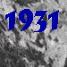
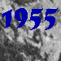
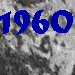
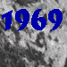
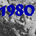
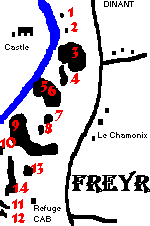
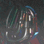

Freyr, first route opened by Xavier de Grunne, in 1931. The route bares his name: La Fissure Grunne,Grunne Cleft.
As soon as 1931, Xavier de Grunne attempted several times the great wall of Al'Legne, the highest in Belgium. One of these attempts was performed with King Albert 1.

Pierre de Radzitzky opened in the Merinos a number of routes, today considered classics of the type.

With the 1960's comes artificial climbing (overhangs, clefts), requiring intensive hammering and nailing.

Towards 1969, a threat loomed over Freyr. Local businessmen thougt to build a caravaning site between the road and the cliffs. The Club Alpin Belge opposed this project and managed to convince the Minister to stop it.

The 1980's witnessed a real development in free climbing.
Freyr today offers vast climbing opportunities for all; it's our duty to preserve and respect this site. Taken from the Topo 'Freyr - Topographie des Rochers'. C.A.B.-B.A.C. Gerard Miserque & Serge Motquin, 1993

1. Ecole - some short easy routes, max 6a 2. Fissures Georget - three or four little cracks, easy 3. Merinos 4. Cinq Anes - First route opened by a cordee of five freaky friends. 5. Tete du Lion - Looks like the head of a lion, lying in the water of the Meuse. 6. Pape - Mostly difficult routes, overhangs! 7. Pucelle 8. Autours 9. Al'Legne - The highest rock in Belgium 10. Fromage 11. Louis-Philippe 12. Jeunesse 13. Gruyere 14. Point de Vue

The classic routes can be climbed with a 40-metre rope. Some routes though, require a 55-metre rope. A minimum of 10 straps (schlinge) is required.
If you want to see some pictures of Freyr, URL to Raffa's HomePage. (If that doesn't work, try to connect to my page in Australia.) You want to know more about climbing in Freyr? Ask me. You can find my address at the bottom of this page.
{kind=link}